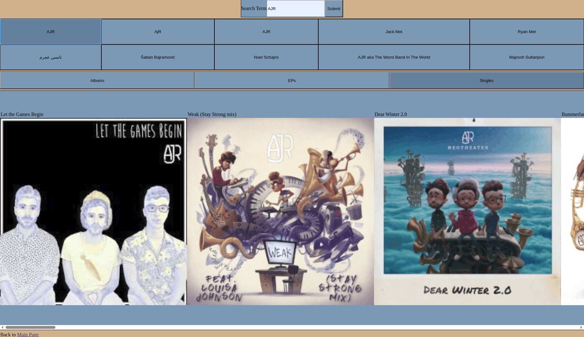

My artist quick reference search.
Why I made this:
I love music, but one thing I despise is having to search through popular streaming services to find all of my artists songs. They either make it obnoxious to scroll through it or only show the top couple of songs by popularity. I decided that I wanted a quick way to find songs, and I needed to improve my html and css knowledge so I made this quick page to learn them.
How it works:
This uses a combination of the MusicBrainz API and the Internet Archive's Coverartarchive service. It first finds the artist information then it will query the API to get the first 100 release, both albums, EPs, and regular songs. I then can use the song id directly in the coverartarchive to fetch the release cover and display it with some Javascript.
Usage:
Simply type in the artist name and hit enter or click the search button. You can then click whichever box seems to be your artist and it will pop up with the singles. You can switch to the artist's albums or EPs by clicking the respective buttons.
Example Usage:
